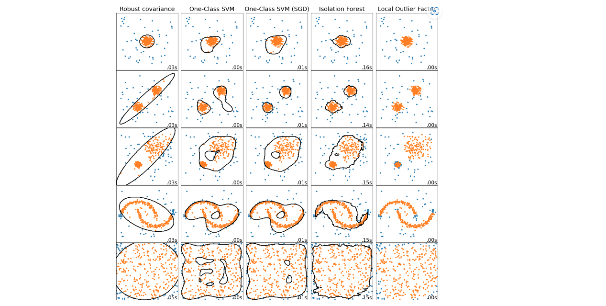
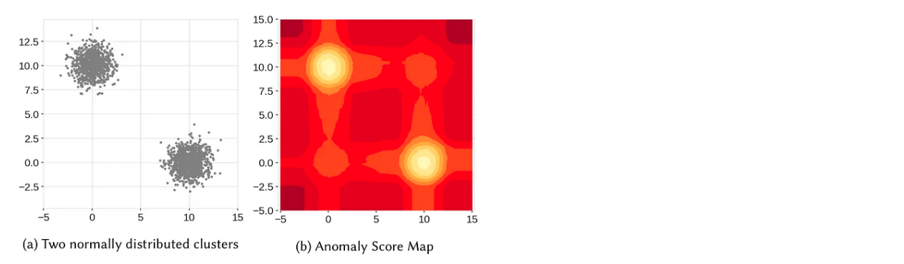
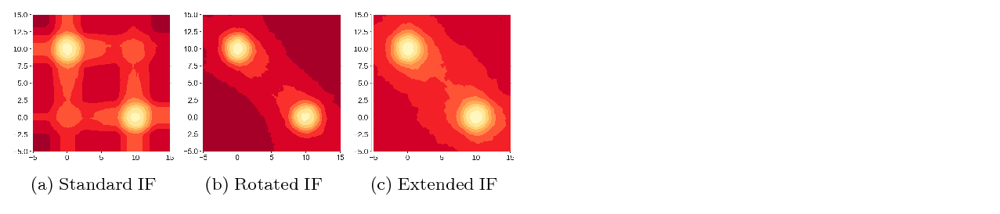

2.8. Outliers#
So we should first divide our data set into train and tests, and remove outliers in the train set, but keep those in the test set, and measure how well our model is doing.
Outlier detection: The training data contains outliers which are defined as observations that are far from the others. Outlier detection estimators thus try to fit the regions where the training data is the most concentrated, ignoring the deviant observations.
Novelty detection: The training data is not polluted by outliers and we are interested in detecting whether a new observation is an outlier. In this context an outlier is also called a novelty.
2.8.1. Outlier detection methods#

Z-score For normal distribution
Interquartile Range for skewed distribution
Quantile:
outliersis out of range [5% - 95%] quantileArbitrary:
outliersis out of specific range of valuesLocal Outlier Factor (LOF)
Isolation Forest / Extended Isolation Forest
Minimum Covariance Determinant.
One-Class SVM
import plotly.express as px
def multivar_boxsplot(listvar, df_raw, df_outliers_handled=None, cols = 4, renderer = 'jpeg'):
cols = min(cols, len(listvar))
rows = (len(listvar) // cols) + 1 if ((len(listvar) % cols) != 0) else (len(listvar) // cols)
fig = make_subplots(rows = rows, cols = cols , subplot_titles=listvar)
for i, var in enumerate(listvar):
fig.add_trace(go.Box(y = df_raw[var], name= 'before', boxmean='sd')
, row=i//cols + 1, col=i%cols + 1 )
if df_outliers_handled is not None:
fig.add_trace(go.Box(y = df_outliers_handled[var], name= 'after', boxmean='sd')
, row=i//cols + 1, col=i%cols + 1 )
fig.update_layout(autosize = True,height=rows*400, showlegend=False)
fig.show(renderer=renderer)
def hist_boxsplot(var, df_raw, df_outliers_handled=None):
df = df_raw[[var]].copy()
df['name_df'] = 'df_raw'
if df_outliers_handled is not None:
df1 = df_outliers_handled[[var]].copy()
df1['name_df'] = 'df_outliers_handled'
df = pd.concat([df,df1])
fig = px.histogram(df, x=var, color="name_df", marginal="box", hover_data=df.columns)
fig.update_layout(barmode='overlay')
fig.update_traces(opacity=0.75)
fig.update_xaxes(categoryorder='category ascending')
fig.show(renderer="jpeg")
def assign_inliers(sr, method = 'iqr', params = (1.5), retbin_inlier = False):
"""
method is in ('std', 'iqr', 'quantile','arbitrary')
params is parameter for each method:
- for 'std' method: params = (multiple of std for inliers)
- for 'iqr' method: params = (multiple of iqr for inliers)
- for 'quantile' method: params = (lower quantile for inliers , upper quantile for inliers )
- for 'arbitrary' method: params = (lowest value for inliers , largest value for inliers )
retbin_inlier = True if return interval of inliers
"""
if type(params) is not tuple:
params = (params,)
if method == 'std':
interval = (sr.mean() - params[0]*sr.std(), sr.mean() + params[0]*sr.std())
elif method == 'iqr':
iqr = sr.quantile(0.75) - sr.quantile(0.25)
interval = (sr.quantile(0.25) - params[0]*iqr, sr.quantile(0.75) + params[0]*iqr)
elif method == 'quantile':
interval = (sr.quantile(params[0]) , sr.quantile(params[1]))
elif method == 'arbitrary':
interval = (params[0] , params[1])
res = (sr >= interval[0]) & (sr <= interval[1])
if retbin_inlier:
res = (res, interval)
return res
data = pd.read_csv('Datasets/titanic.csv',usecols = ['age', 'fare', 'survived']).dropna()
X_train, X_test, y_train, y_test = train_test_split(
data[['age', 'fare']],
data['survived'],
test_size=0.3,
random_state=0)
X_train.shape, X_test.shape
((731, 2), (314, 2))
hist_boxsplot('age', X_train)
2.8.1.1. Z-score#
Outlier= {x| (x>mean+3sdt) or (x<mean-3std) }
2.8.1.2. Interquartile Range#
IQR = the 75th percentile - the 25th percentile
outliers out of upper/lower boundary
Upper boundary=75th quantile+ (IQR* 1.5)Lower boundary=25th quantile- (IQR* 1.5)
extreme case
Upper boundary=75th quantile+ (IQR* 3)Lower boundary=25th quantile- (IQR* 3)
2.8.1.3. Local Outlier Factor (LOF)#
Terms
K-distance: của 1 điểm là khoảng cách từ điểm đó tới điểm thứ k gần nhấtK-neighborsNₖ(A): của 1 điểm A là tập hợp các điểm có khoảng cách nhỏ hơn hoặc bằng K-distance của A. (trong vùng K-neighbors có ít nhất K điểm). ||Nₖ(A)|| là số điểm trong K-neighbors.reachability density (RD): khoảng cách của 1 điểm so với điểm đó, với k-distance của điểm đó\[RD(A,X) = max( K-distance(X), distance(A,X) )\]Local reachability density (LRD):\[LRD_{k}(A)=\frac{1}{\sum_{X_j \in N_{k}(A)}\frac{\mathrm{RD}(A,X j)}{||N_{k}(A)||}}\]thể hiện 1 điểm cách cụm gần nhất xa hay không, low LRD thể hiệm điểm đó càng cách xa cụm gần nhất.
local outlier factor (LOF): so sánh LRD trung bình của các điểm thuộc k-neighbors của điểm A với LRD(A)\[LOF_{k}(A)=\frac{\sum_{X j\,\,\in N_{k}(A)}\,LRD_{k}(X j)}{||N_{k}(A)||}\times\frac{1}{LRD_{k}(A)}\]LOF <= 1 thường không phải là outlier, LOF lớn có thể là outliers.
Advantages
Khá nhạy cảm với điểm nằm gần cụm có mật độ dày nhưng vẫn có thể track là outlier
Disadvantages
Không có boundary inlier, nên không có method để predict dữ liệu mới liệu có phải outlier hay không ?
Không áp dụng được khi có dữ liệu mới
LOF là phương pháp xác định ngoại lai cho 1 cụm local nào đó thay vì global, lựa chọn K phụ thuộc vào người dùng.
from sklearn.neighbors import LocalOutlierFactor
# identify outliers in the training dataset
lof = LocalOutlierFactor()
x_inliers_hat = lof.fit_predict(X_train)
# select all rows that are not outliers
mask = (x_inliers_hat != -1)
X_train_inliers, y_train_inliers = X_train.loc[mask, :], y_train.loc[mask]
# summarize the shape of the updated training dataset
print(X_train.shape, y_train.shape)
print(X_train_inliers.shape, y_train_inliers.shape)
(731, 2) (731,)
(701, 2) (701,)
2.8.1.4. Isolation Forest#
Sử dụng phân tách cây quyết định nhị phân để tách thành tối đa các leaf, với feature selection và threshold ngẫu nhiên. mức độ score được do bởi độ sâu của lá so với root.
Disadvantages:
Mô hình phụ thuộc vào hệ số
Contaminationlà tỷ lệ outlier trong sampleMô hình có khả năng bị bias do phương pháp binary cut, ví dụ: ( khắc phụ bằng model
Extended Isolation Forest- thay đổi intercept và slope ngẫu nhiên đường brand cut)

–> Isolation Forest tạo ra các vùng có khả năng không là outlier nhưng thực tế nếu có point tại đó thì là outlier

So sánh Isolation Forest và biến thể
# Vanilla Isolation Forest
from sklearn.ensemble import IsolationForest
# identify outliers in the training dataset
IF = IsolationForest(contamination = 0.1) # Contamination là tỷ lệ outlier
x_inliers_hat = IF.fit_predict(X_train)
# select all rows that are not outliers
mask = (x_inliers_hat != -1)
X_train_inliers, y_train_inliers = X_train.loc[mask, :], y_train.loc[mask]
# summarize the shape of the updated training dataset
print('before remove outliers:',X_train.shape, y_train.shape)
print('after remove outliers: ',X_train_inliers.shape, y_train_inliers.shape)
before remove outliers: (731, 2) (731,)
after remove outliers: (658, 2) (658,)
/Users/khongdat/miniforge3/lib/python3.10/site-packages/sklearn/base.py:409: UserWarning: X does not have valid feature names, but IsolationForest was fitted with feature names
warnings.warn(
# Extended Isolation Forest
import eif as iso
# change the ExtensionLevel (default = 0 at Vanilla IF), change to (n_dimensions - 1)
eif = iso.iForest(X_train.values,
ntrees = 100,
sample_size = 256,
ExtensionLevel = X_train.shape[1] - 1)
anomaly_scores = eif.compute_paths(X_in = X_train.values)
anomaly_scores_sorted = np.argsort(anomaly_scores)
indices_with_preds = anomaly_scores_sorted[-int(np.ceil(anomalies_ratio * X_train.shape[0])):]
y_pred = np.zeros_like(y_train)
y_pred[indices_with_preds] = 1
2.8.1.5. Elliptic Envelope#
Áp dụng cho dữ liệu phân bố ellip gaussian
Procedure
lấy các subset từ samples với size cố định và chọn ra subset có covariance nhỏ nhất.
Tính parameter từ subsample được chọn và outlier là những point có khoảng cách lớn nhất với cụm sample.
from sklearn.covariance import EllipticEnvelope
# identify outliers in the training dataset
ee = EllipticEnvelope(contamination = 0.1) # Contamination là tỷ lệ outlier
x_inliers_hat = ee.fit_predict(X_train)
# select all rows that are not outliers
mask = (x_inliers_hat != -1)
X_train_inliers, y_train_inliers = X_train.loc[mask, :], y_train.loc[mask]
# summarize the shape of the updated training dataset
print('before remove outliers:',X_train.shape, y_train.shape)
print('after remove outliers: ',X_train_inliers.shape, y_train_inliers.shape)
before remove outliers: (731, 2) (731,)
after remove outliers: (658, 2) (658,)
2.8.1.6. One-Class SVM#
One-class SVMlà 1 biến thể củaStandard-SVM.Với thuật toán Standard-SVM, sẽ tìm 1 hyperplane (siêu mặt phẳng) để phân tách 2 classes với margin lớn nhất có thể (cách đều 2 điểm
positivevànegativegần nhất)Với One-class SVM sẽ tương tự, nhưng thay vào đó sẽ tìm 1 hyperphere (siêu cầu) đều bao gọn các điểm
normalbên trong, các điểm bên ngoài hypersphere sẽ làoutliers
Challenge:
Requires fine-tuning of its hyperparameter
nuto handle outliers and prevent overfitting
SGDOneClassSVM: is An online linear version of the One-Class SVM. This implementation scales linearly with the number of samples and can be used with a kernel approximation to approximate the solution of a kernelized svm.OneClassSVM whose complexity is at best quadratic in the number of samples, uses a Gaussian kernel by default
from sklearn.svm import OneClassSVM
oc = OneClassSVM(nu=0.01) # nu: % outliers in sample
x_inliers_hat = oc.fit_predict(X_train)
# select all rows that are not outliers
mask = x_inliers_hat != -1
X_train_inliers, y_train_inliers = X_train.loc[mask, :], y_train.loc[mask]
# summarize the shape of the updated training dataset
print('before remove outliers:',X_train.shape, y_train.shape)
print('after remove outliers: ',X_train_inliers.shape, y_train_inliers.shape)
before remove outliers: (731, 2) (731,)
after remove outliers: (726, 2) (726,)
2.8.2. Outlier handling#
Trimming: remove the outliers from our datasetPros: Quick
Cons: Outliers could be contained useful information in other variables, and may be remove a big chunk of dataset
Treat: outliers would be assign as missing data, and proceed with anymissing data imputation techniquePros: does not remove data
Cons: distorts the distributions of the variables and relationship among variables
Discrestisation: outliers are placed in border bins together with higher or lower values of the distributionCensoring(winsorization/capping/top-bottom coding): capping the variable distribution at a max and / or minimum value, than any value out of cap range would be replace by cap value.Pros: does not remove data
Cons: distorts the distributions of the variables and relationship among variables
def outlier_action(var, df, action_method = 'trim', assign_params = ('iqr',1.5)):
"""
action_method is in ('trim', 'cap', 'treat')
- trim: drop outliers obs
- treat: assign outliers value into missing (np.nan)
- cap: assign outliers by the nearest boundary of inliers range
assign_params are method's name and its parameter to assign inlier in `assign_inliers` function:
"""
df_c = df.copy()
mask, interval = assign_inliers(df_c[var], method = assign_params[0], params = assign_params[1:], retbin_inlier = True)
if action_method == 'trim':
return df_c[mask]
elif action_method == 'treat':
df_c.loc[~mask, var] = np.nan
return df_c
elif action_method == 'cap':
df_c.loc[sr_c < interval[0], var] = interval[0]
df_c.loc[sr_c > interval[1], var] = interval[1]
return df_c
2.8.2.1. Trimming#
X_train_trim = outlier_action('age', X_train, 'trim')
hist_boxsplot('age', X_train_trim)
from feature_engine.outliers import OutlierTrimmer
# set up the capper
capper = OutlierTrimmer(capping_method='iqr', tail='right', fold=1.5, variables=['age', 'fare'])
# fit the capper
capper.fit(X_train)
# transform the data
train_t= capper.transform(X_train)
test_t= capper.transform(X_test)
2.8.2.2. Treat#
X_train_treat = outlier_action('age', X_train, 'treat')
hist_boxsplot('age', X_train_treat)
2.8.2.3. Cap#
# cap by iqr, gaussian, quantiles
from feature_engine.outliers import Winsorizer
cap = Winsorizer(
capping_method = 'iqr', # gaussian, quantiles
tail = 'both',
fold = 1.5,
add_indicators= False,
variables = ['age'],
missing_values= 'ignore',
)
cap.fit(X_train)
train_t = cap.transform(X_train)
test_t = cap.transform(X_test)
# cap by arbitracy value
from feature_engine.outliers import ArbitraryOutlierCapper
cap = ArbitraryOutlierCapper(
max_capping_dict={'age': 50, 'fare': 200},
min_capping_dict={'age': 10, 'fare': 100}
)
cap.fit(X_train)
train_t = cap.transform(X_train)
test_t = cap.transform(X_test)